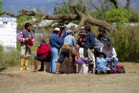
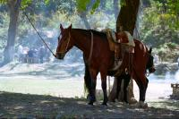
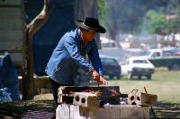
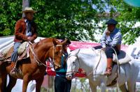
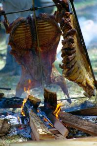
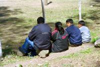
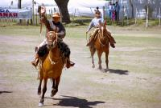
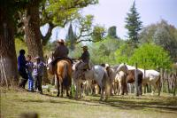

|
Vendredi 14 septembre
Je sais que ça peut paraître choquant de dire ça alors qu'il y en a qui ont
du mal à prendre 15 jours de vacances faute de temps ou d'argent, mais il ne
nous reste que 3 mois et 10 jours de vacances... et il nous reste encore à visiter
la Bolivie, un tout petit bout du Brésil, un peu le Mexique pour finir par le
Costa Rica. En plus, l'Argentine -avec le Brésil- est l'un des pays les plus
chers de l'Amérique du Sud. C'est ce qui explique qu'on traverse ce magnifique
pays en courant. Il n'y a qu'à regarder une carte et constater qu'on a descendu
la moitié du Chili en un mois et qu'on a consacré seulement une vingtaine de
jour pour aller du sud de l'Argentine pour aller au nord est puis au nord ouest...
Du coup, on est souvent dans les bus à faire d'énormes sauts. Et aujourd´hui,
on est parti pour faire dans les 1400 kms pour aller d'Iguazu à Salta en passant
par Posadas et Tucuman.
Samedi 15 septembre
On a quitté Iguazu hier à 10H00 du matin. On est arrivé ce matin vers 8H00
à Tucuman, une grande ville moderne tout au Nord Ouest du pays, plantée juste
à côté de la Cordillère mais dont on ne connaitra que l'immense terminal de
bus collé à un centre commercial luxueux. De là, on a pris un bus vers 11H00
et on arrive enfin à Salta, il est quand même 16h00. Ca fait à peine une trentaine
d'heures qu'on voyage. On est maintenant rodés. On demande un plan de la ville
au petit bureau d'info au terminal des bus. De là, on part au centre ville,
à un quart d'heure de marche (avec les sacs à dos, évidement), où un gars sympa
comme tout nous dégote une pension, une casa de familia, tout à fait correcte,
même si on est un peu déçus de ne plus retrouver les hospedaje du Chili où on
était vraiment au sein de la famille et de la maison. Ici, c'est toujours un
peu un hôtel, même s'il y a une cuisine, une salle commune. Les proprios gèrent
ça de façon très pro et vivent un peu à l'écart. Peut-être on n'a pas bien cherché,
mais on a fait des efforts pourtant.
Salta est une ville qui a l'air bien agréable, à l'image de son parc près du
centre qui offre à marion la possibilité d'admirer les canards dans un immense
bassin où les oiseaux peuvent nager avant d'aller se reposer sur l'un des trois
ilôts ombragés par d'immenses palmiers. Très joli. Jusqu'à Buenos Aires, les
gens étaient plutôt de type occidentaux. A Iguazu, on retrouve les visages indiens
qu'on avait déjà vus au Pérou et aussi des gens à la peau mat brésiliens. Ici,
pas de doutes, on s'approche de la Bolivie, le pays qui compte le plus d'indiens.
On a l'impression d'avoir un peu changé d'Argentine.
Dimanche 16 septembre
Hier, alors qu'on cherchait les adresses d'hôtels à l'office du tourisme, un
gars est venu déposer des prospectus pour une fête à Campo Quijano, un village
à 45 minutes en bus. Il s'y prend peut-être un peu tard, sa fête, c'est aujourd'hui!
Le gars sympa de l'office nous dit que c'est chouette et typique, alors on
décide d'y aller. A moins que ce soit autre chose qui nous ait décidé. Ou plutôt
qui a décidé Marion. Parce que cette fête, c'est la fête du cheval! Le moins
qu'on puisse dire, c'est que c'est typique. C'est même très local, à tel point
qu'on a un peu de mal à trouver l'endroit. Ils ont installé une grande clôture
dans le camping municipal. On est assis dans l'herbe autour de l'enclos et on
doit être les 2 seuls touristes. Devant, des familles de gauchos, ces cavaliers
de la pampa, se préparent à fêter en dégustant la viande tout juste sortie du
barbecue. Avec leurs chapeaux, leurs bottes et leurs ceintures, ils ont fière
allure...
Et puis les spectacle commence. C'est en fait un rodéo sur cheval. De jeunes
chevaux encore sauvages sont montés par des gauchos, le but étant de rester
le plus longtemps dessus. Spectacle garanti avec de superbes chutes en prime.
Le rodéo, c'est un peu comme la corrida, l'homme contre l'animal, une sorte
d'épreuve pour montrer sa virilité (on n'a pas vu de femmes). Mais ici, on ne
tue pas l'animal, ce n'est pas la boucherie. C'est même plutôt l'homme qui se
fait mal... je pense à celui-là qui vient de se prendre une de ces gamelles!
Son cheval a fait un saut en arrière, presque une pirouette et s'est retrouvé
couché sur le dos et sur son cavalier... aïe aïe aïe. Et le tout en musique,
à la guitare même. Un gros barbu décrit le rodéo en chantant. "Il ne s'est pas
fait mal... mais il est touché dans son orgueil... il n'a tenu que quelques
secondes devant ce public si nombreux". Je me demande s'il chante et commente
tout ce qui se passe chez lui à la maison. Je plains sa femme. N'empêche qu'il
a quand même tenu 5 ou 6 heures en improvisant tout le temps.
Lundi 17 septembre
Peut-être qu'un jour on arrêtera d'empoisonner l'air. Peut-être qu'un jour
on ne prendra plus les mers pour des poubelles. C'est peut-être une question
de temps, d'éducation, de prise de conscience tout simplement. J'ai l'impression
qu'en France par exemple, les gens font de plus en plus attention aux problèmes
de l'environnement qu'il y a 10 ou 20 ans. Les ordures sont en parties triées,
on jette moins les papiers et les plastiques dans les rues et par la fenêtre
de la voiture. Il y a encore du boulot, c'est un fait, mais il me semble que
le fait d'en parler, que les campagnes de sensibilation, ou encore que d'envoyer
des classes de collégiens nettoyer les forêts, que tout cela a fait aller les
choses dans le bon sens.
J'espère aussi que ça va aller en s'arrangeant aussi en Argentine et au Chili,
parce que pour le moment, ce n'est pas terrible. Déjà en Patagonie, on devinait
qeu notre bus entrait dans une ville 2 ou 3 km avant. Les satanés sachets plastiques
étaient comme des panneaux indicateurs accrochés dans les arbustes, les buissons
ou étalés dans l'herbe. Et ici à Salta, c'est pareil. ce parc avec son immense
bassin est superbe. Mais les sachets volent et flottent avec les canards. On
avait déjà vu ça en Inde, au Vietnam, mais ici c'est tellement moderne et proche
de nos sociétés que ça en devient plus choquant encore. Peut-être que le plastique
a remplacé trop rapidement le papier, le carton ou d'autres matières rapidement
biodégradables et que les gens ne se sont pas encore rendu compte que jeter
du papier ou du plastique n'a pas du tout les mêmes conséquences... peut-être
qu'ils vont avoir un jour le déclic, la prise de conscience... peut-être. Sinon,
Salta est une ville plutôt agréable. On a lu dans notre guide qu'elle était
la plus belle ville d'Argentine. Ah bon.
Suite du voyage : Tilcara
|

Argentine
Campo Quijano
|

Argentine
Campo Quijano
|

Argentine
Campo Quijano
|

Argentine
Campo Quijano
|

Argentine
Campo Quijano
|

Argentine
Campo Quijano
|

Argentine
Campo Quijano
|

Argentine
Campo Quijano
|
|
|